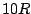
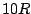
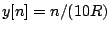
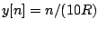
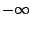
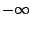
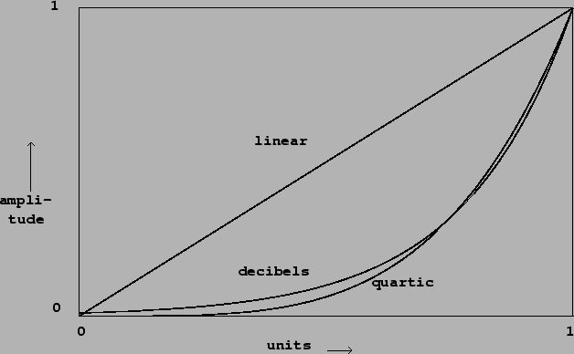

Suppose you wish to fade a signal in over a period of ten seconds--that is,
you wish to multiply it by an amplitude-controlling signal  which rises
from 0 to 1 in value over  samples, where
which rises
from 0 to 1 in value over  samples, where  is the sample rate. The
most obvious choice would be a linear ramp:
. But this will
not turn out to yield a smooth increase in perceived loudness. Over the first
second
is the sample rate. The
most obvious choice would be a linear ramp:
. But this will
not turn out to yield a smooth increase in perceived loudness. Over the first
second  rises from  dB to -20 dB, over the next four by another
14 dB, and over the remaining five, only by the remaining 6 dB. Over most of
the ten second period the rise in amplitude will be barely perceptible.
rises from  dB to -20 dB, over the next four by another
14 dB, and over the remaining five, only by the remaining 6 dB. Over most of
the ten second period the rise in amplitude will be barely perceptible.
Another possibility would be to ramp  exponentially, so that it rises at
a constant rate in dB. You would have to fix the initial amplitude to be
inaudible, say 0 dB (if we fix unity at 100 dB). Now we have the opposite
problem: for the first five seconds the amplitude control will rise from 0 dB
(inaudible) to 50 dB (pianissimo); this part of the fade-in should only have
taken up the first second or so.
exponentially, so that it rises at
a constant rate in dB. You would have to fix the initial amplitude to be
inaudible, say 0 dB (if we fix unity at 100 dB). Now we have the opposite
problem: for the first five seconds the amplitude control will rise from 0 dB
(inaudible) to 50 dB (pianissimo); this part of the fade-in should only have
taken up the first second or so.
A more natural progression would perhaps have been to regard the fade-in as a timed succession of dynamics, 0-ppp-pp-p-mp-mf-f-ff-fff, with each step taking roughly one second.
A fade-in ideally should obey some scale in between logarithmic and linear. A
somewhat arbitrary choice, but useful in practice, is the quartic curve:
Figure 4.3 shows three amplitude transfer functions:
|  |
We can think of the three curves as showing
transfer functions, from an abstract control (ranging from 0 to 1) to a
linear amplitude. After we choose a suitable transfer function  , we
can compute a corresponding amplitude control signal; if we wish to ramp
over
, we
can compute a corresponding amplitude control signal; if we wish to ramp
over  samples from silence to unity gain, the control signal would be:
samples from silence to unity gain, the control signal would be: